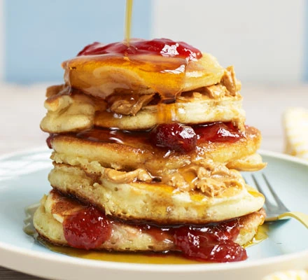

American-Style Pancakes

Description:
Easy, American-style, fluffy pancakes. Great for breakfast or brunch. Great with blueberries, raspberries, strawberries, chocolate chips or syrup.
Ingredients:
- 200g self-raising flour
- 1 ½ tsp baking powder
- 2 tbsps golden caster sugar
- 3 large eggs
- 25g melted butter, plus extra for cooking
- 200ml milk
- vegetable oil, for cooking
- 200g blueberries (or other fruit)
Steps:
- Mix 200g self-raising flour, 1 ½ tsp baking powder, 2 tbsps golden caster sugar and a pinch of salt together in a large bowl.
- Create a well in the centre with the back of your spoon then add 3 large eggs, 25g melted butter and 200ml milk.
- Whisk together either with a balloon whisk or electric hand beaters until smooth then pour into a jug.
- Rub vegetable oil over the base of your pan using kitchen roll.
- Heat a small knob of butter and 1 tsp of oil in a large, non-stick frying pan over a medium heat. When the butter looks frothy, pour in rounds of the batter, approximately 8cm wide. Make sure you don’t put the pancakes too close together as they will spread during cooking.
- Add blueberries to the pancake mix in the pan.
- Cook the pancakes on one side for about 1-2 mins or until lots of tiny bubbles start to appear and pop on the surface. Flip the pancakes over and cook for a further minute on the other side. Repeat until all the batter is used up.
- Serve your pancakes stacked up on a plate with a drizzle of maple syrup and any of your favourite toppings.